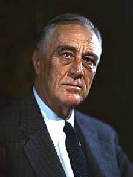
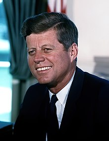

Top 5 U.S. Presidents Quiz
This is a web page to quiz yourself about the top 5 U.S. Presidents
1st President

George Washington was the first president of the U.S.A.
His presidency established a strong federal government, created a national bank, and set a policy of neutrality in foreign affairs.
He voluntarily stepped down after two terms, setting a precedent for peaceful transfer of power.
A. George Washington set up the President's Cabinet, a group comprising of the heads of executive departemnets
B. George Washington cut down his father's cherry tree at 6 years old
C. George Washington was King George III's brother
16th President

Abraham Lincoln was the 16th president of the U.S.A
A. Abraham Lincoln was a Senator between 1847-1849
B. Abraham Lincoln was inducted to the Basketball Hall of Fame
C. Abraham Lincoln spoked the Gettysburg Address on November 19, 1863 at Gettysburg, Pennsylvania
26th President

Theodore Roosevelt was the 26th president of the U.S.A
A. Theodore Roosevelt was the older brother of Franklin D. Roosevelt
B. Theodore Roosevelt served and fought during the Mexican-American War
C. Theodore Roosevelt signed the Antiquities act of 1906 which protected national parks and monuments like Yellowstone and Yosemite
32nd President

Franklin D. Roosevelt was the 32nd president of the U.S.A
A. Franklin D. Roosevelt was the older brother of Theodore Roosevelt
B. Franklin D. Roosevelt's New Deal help the unemployed, farmers, and America during the Great Depression
C. Franklin D. Roosevelt served four full terms as president.
35 President

John F. Kennedy was the 35th president of the U.S.A
A. John F. Kennedy resolved the CubaN Missle Crisis in 1962, which prevented nuclear war with the Soviet Union
B. John F. Kennedy served in the Army during WWII
C. John F. Kennedy acted in the movie PT-109